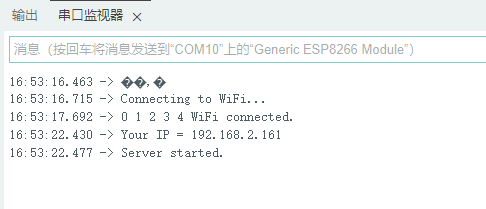

前言
最近在学习ESP8266，使用ESP8266创建一个服务器，用网页控制舵机的角度。
开始
软件
1
2
3
4
5
6
7
8
9
10
11
12
13
14
15
16
17
18
19
20
21
22
23
24
25
26
27
28
29
30
31
32
33
34
35
36
37
38
39
40
41
42
43
44
45
46
47
48
49
50
51
52
53
54
55
56
57
58
59
60
61
62
63
64
65
66
67
68
69
70
71
72
73
74
75
76
77
78
79
80
81
82
83
84
85
86
87
88
89
90
91
92
93
94
|
#include <ESP8266WiFi.h>
#include <Servo.h>
const char* ssid = "********";
const char* password = "********";
WiFiServer server(80);
Servo servo;
void setup() {
Serial.begin(9600);
WiFi.begin(ssid, password);
Serial.println("");
Serial.println("Connecting to WiFi...");
int i=0;
while (WiFi.status() != WL_CONNECTED){
delay (1000);
Serial.print(i++);Serial.print(" ");}
Serial.println("WiFi connected.");
Serial.print("Your IP = ");
Serial.println(WiFi.localIP());
server.begin();
Serial.println("Server started.");
servo.attach(2);
}
void loop() {
WiFiClient client = server.available();
if (client) {
Serial.println("New client connected.");
while (client.connected()) {
String request = client.readStringUntil('\r');
Serial.println(request);
client.flush();
if (request.indexOf("GET /?value=") != -1) {
int valueStart = request.indexOf("=") + 1;
int valueEnd = request.indexOf(" HTTP");
String valueString = request.substring(valueStart, valueEnd);
int value = valueString.toInt();
int angle = map(value, 0, 180, 0, 180);
servo.write(angle);
}
client.println("HTTP/1.1 200 OK");
client.println("Content-Type: text/html");
client.println("");
client.println("<!DOCTYPE HTML>");
client.println("<html>");
client.println("<head><title>ESP8266 Servo Control</title></head>");
client.println("<style>body{font-family:Arial,sans-serif;background-color:#f0f0f0;margin:20px;}h1{color:#333333;text-align:center;}input[type=range]{width:80%;margin:10px auto;display:block;}p{text-align:center;font-size:20px;}span{color:#ff0000;font-weight:bold;}</style>");
client.println("<body>");
client.println("<h1>ESP8266 Servo Control</h1>");
client.println("<input type=\"range\" min=\"0\" max=\"180\" value=\"90\" ");
client.println("oninput=\"updateValue(this.value)\">");
client.println("<p>Value: <span id=\"value\"></span></p>");
client.println("<script>");
client.println("function updateValue(newValue) {");
client.println("document.getElementById(\"value\").innerHTML = newValue;");
client.println("var xmlhttp = new XMLHttpRequest();");
client.println("xmlhttp.open(\"GET\", \"?value=\" + newValue, true);");
client.println("xmlhttp.send(); }");
client.println("</script>");
client.println("</body>");
client.println("</html>");
break;
}
client.stop();
Serial.println("Client disconnected.");
}
}
|
需要再这里把SSID和PASSWORD修改成你WIFI的名字和密码。
1
2
3
|
const char* ssid = "*********";
const char* password = "********";
|
硬件
打开Arduino添加库文件<ESP8266WiFi.h>和<Servo.h>，上传EPS8266，打开串口监视器波特率选择9600，不出意外的话就会看到一下内容，如果没有就按ESP8266的RST键。

连接同一WiFi在浏览器地址栏输入ESP8266的IP地址，拖动滑块舵机就会跟着动啦🎉。
 微信
微信 支付宝
支付宝